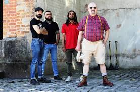

Garotos podres
Esta página cita fontes, mas que não cobrem todo o conteúdo. Ajude a inserir referências (Encontre fontes: Google (N • L • A • I • WP refs) • ABW • CAPES).
(Outubro de 2022)
| Garotos Podres | |
|---|---|
|
 |
|
| Informações gerais | |
| Origem | Máua, São Paulp |
| País | Brasil |
| Gêneros | Punk rock/street punk/ska |
| Período de atividade | 1982-presente |
| Integrantes |
Mao
Rinaldi Uel Negralha |
| Ex-integrantes |
Godô
Maurício Português Mauro Michel "Sukata" Stamatopoulos Leandro Nunes (Capitão Caverna) Shu Cacá Saffiotti Rodrigo Japa Tony Karpa |
| Página oficial | https://www.facebook.com/ |
Garotos Podres é uma banda brasileira de punk rock formada no final de 1982, na cidade de Mauá, no ABC paulista. Suas maiores influências são as bandas punks do final dos anos 70 e começo dos anos 80. A banda é conhecida por ser politizada e engajada em causas sociais e participações em movimentos vários na sociedade civil. A primeira apresentação dos Garotos aconteceu em 1983 na cidade de Santo André num evento que reuniu vários grupos de vários estilos musicais em prol do Fundo de Greve dos Metalúrgicos do ABC.
História
Início
Entraram em estúdio em 1985 para gravar o que seria uma demo-tape. Foram gravadas e mixadas catorze músicas em doze horas num estúdio de oito canais, e o resultado foi considerado tão bom para os padrões da época que onze destas músicas acabaram se tornando o primeiro álbum da banda, intitulado "Mais Podres do que Nunca", editado pelo extinto selo Rocker e no ano seguinte pelo selo Lup-Som. Esse disco chegou a marca das 50.000 cópias vendidas, um recorde de vendagem de discos independentes na época e continua sendo distribuído em CD até hoje, ultrapassando a marca das 70.000 cópias.
Estando em plena ditadura militar, era necessário enviar cópias das letras das músicas para o Departamento de Censura Federal. Deste álbum, a música "Johnny" e “Vou Fazer Cocô” foram censuradas, sendo proibida a sua execução bem como as músicas: "Papai-Noel Filho da Puta" (Papai-Noel Velho Batuta) e "Maldita Polícia" (Maldita Preguiça) tiveram suas letras mudadas propositalmente pelos Garotos para burlar a censura.
A partir daí a banda se popularizou, abrangendo não apenas a cena punk mas também o mais variado tipo de público, tornando-se a primeira banda punk do Brasil a ter suas músicas veiculadas na programação normal de algumas rádios. Isso permitiu ao grupo a realização de vários shows pelo país, o que também colaborou na aceitação de outras bandas underground pela mídia.
Lançam em 1988 o seu segundo álbum, "Pior que Antes" pela gravadora Continental, que teve a música "Batman" censurada, sendo proibida sua execução pelos meios de comunicação. A música "Subúrbio Operário" foi incluída no curta metragem, premiado no Festival de Cinema de Nova York e no Festival de Cinema de Brasília, "Rota ABC" do cineasta Francisco César Filho em 1990, onde a banda faz uma participação.
Após ficarem cinco anos sem lançar nenhum álbum, em 1993 o selo Radical Records edita o quarto trabalho dos Garotos, Canções para Ninar, emplacando nas rádios rock as faixas: "Fernandinho Veadinho", "Oi! Tudo bem?" e "Rock de Subúrbio" (primeiro videoclipe da banda) enquanto são ameaçados de serem processados por uma certa pessoa que se sentiu ofendida com a faixa "Fernandinho Veadinho".
A essa altura a fama dos Garotos já havia ultrapassado os limites nacionais. Passam a manter contatos com selos da Europa, principalmente Portugal e Alemanha, o que resultou no lançamento de vários trabalhos na Alemanha, França, Portugal e Estados Unidos. Em 1995 realizam uma tour pela Europa junto com a banda portuguesa Mata-Ratos.
No final de 1997 lançam o seu quarto álbum pela gravadora Paradoxx Music, "Com a Corda Toda" , tendo a música "O Mundo não pára de Girar" uma das mais executadas na rádio rock 89FM (São Paulo). A música "Mancha" foi escolhida para ser o segundo videoclipe da banda que contou com a participação do popular Pedro de Lara. "… é que eles descobriram que eu também sou podre e foram me procurar.", "Um dos ex-jurados mais famosos de Silvio Santos, ele afirma que aceitou o convite porque os Garotos Podres, como ele, representam uma libertação dos preconceitos para o povo." (Pedro de Lara , Diário Popular outubro/97 - sobre a sua participação no videoclipe "Mancha")
Em 1999, lançam no Brasil seu primeiro álbum ao vivo “Rock de Subúrbio – Live!”. Editado e lançado inicialmente em Portugal em 1995. Foi gravado num pequeno show em um bar, na cidade de Mauá (SP) em 1995.
Em 2001, lançam o seu segundo álbum ao vivo, “Live in Rio”, gravado no Ballroom em outubro de 2000 e editado pela própria banda.
Novamente, em 2003, suas músicas servem de inspiração para outra curta metragem; “Os Últimos Dias De Papai-Noel” produzido pelo cineasta Eduardo Aguilar, que tem como tema a música “Papai-Noel Filho da Puta”, que foi exibido com sucesso na Mostra do Audiovisual Paulista deste mesmo ano. Além da música “Papai-Noel Filho da Puta” também foi incluído neste curta as músicas “Miseráveis Ovelhas” e Liberdade (“ Onde esta“?)”.
Desde o início da banda o que mais chamou a atenção da mídia e do público, foram suas letras "politizadas", irônicas, carregadas de sarcasmo e humor negro e as vezes até ingênuas que muitas vezes foram incompreendidas, e que causaram em algumas cabeças menos privilegiadas uma série de preconceitos em relação aos Garotos e várias tentativas frustradas de rotular o grupo.
Apesar de estarem na estrada há tanto tempo, os Garotos Podres nunca sobreviveram da música, todos os integrantes tem outras atividades que lhes garantem o sustento e a sobrevivência da banda. Isto lhes deu a liberdade de criarem o seu próprio estilo musical e realmente só tocarem o que gostam.
É inegável a importância e a influência dos Garotos Podres no cenário do rock alternativo brasileiro, a prova disso é o CD “Tributo Garotos Podres – 20 anos de Podridão”, coletânea lançada em 2002 pelo selo independente Rotten Records em comemoração aos 20 anos da banda, onde 23 bandas de diferentes estilos e nacionalidades como: Inocentes, Ratos de Porão, Ultraje a Rigor, Tihuana, Devotos, Acromaniacos (Portugal), Muerte Lenta (Argentina), Kães Vadius, Underboys, Lambrusco Kids, Muzzarelas, etc., interpretam suas músicas.
Em 2003 lançaram o seu último trabalho utilizando o nome “Garotos Podres”: “Garotozil de Podrezepam – 100mg”. Um ano depois, fazem shows em Portugal e Espanha.
O Satânico Dr. Mao e os Espiões Secretos
Em julho de 2012, a banda se separa, por questões políticas e ideológicas. Mao e o guitarrista Cacá Saffiotti rompem com Sukata (Michel Stamatopoulos, baixista que também atua como advogado) e Leandro Ferreira (baterista). Mao registrou o nome no Inpi (Instituto Nacional de Propriedade Industrial), mas, como o processo de análise e aprovação da marca é lento, Sukata e Leandro rapidamente remontaram o Garotos Podres com outra formação, tendo o veterano Gildo Constantino (ex-Pátria Armada) como vocalista.
Enquanto a questão jurídica não se resolvia, o líder da banda monta, em 2014, a banda O Satânico Dr. Mao e os Espiões Secretos.
A outra parte, que seguia com o nome de Garotos e excursionava com a formação: Gildo (vocal), Sukata (baixo), Leandro "Caverna" Ferreira (bateria) e Tio Denis (guitarra). Em 5 de julho de 2013 fazem sua primeira apresentação, no Hangar 110, em São Paulo, como show de abertura para CJ Ramone. Porém, já em 2014, esta formação encerra as atividades, apesar da briga judicial ainda seguir.
Retorno
A partir de 2016, Mao começa a retomar suas atividades no Garotos Podres.
Em abril de 2018, lançaram um compacto no formato digital, intitulado: Canções de Resistência (One RPM). Duas músicas integram esta obra: "Grândola, Vila Morena" e "Aos Fuzilados da CSN". Videoclipes destas músicas também estão disponíveis na internet.
Discografia
Álbuns
- Mais Podres do que Nunca (LP, 1985, Rocker/Lup-Som)
- Pior que Antes (LP, 1988, Continental)
- Canções para Ninar (LP/CD, 1993, Radical Records)
- Com a Corda Toda (CD, 1997, Paradoxx Music)
- Garotozil de Podrezepam (CD, 2003, Independente)
- Contra os Coxinhas Renegados Inimigos do Povo (CD. 2014, Independente)
- Canções de Resistência (compacto digital, One RPM, 2018)
Ao vivo
- Rock de Subúrbio - Live! (CD, 1995, Garotos Podres Records)
- Garotos Podres - Live in Rio (CD, 2001, Independente)
Compilações
- Ataque Sonoro (LP, 1985, Ataque Frontal)
- Vozes da Raiva Vol.1 (CD, 1994, Fast'n'loud)
- Um Chute na Oreia! (CD, 1995, Fast'n'loud)
- Urbanoise (CD, 1996, Rotten Records)
- Play it Loud (CD, 1996, Fast'n'loud)
- Arriba! Arriba! (CD, 1997, Fast'n'loud)
- Caught in the Cyclone (CD, 1997, Cyclone Records)
- Punk Rock Makes the World Go Round (CD, 1997, Teenage Rebels Records)
- Cult 22 (CD, 1997, RVC Music)
- Rock da Cidade (CD, 1998, Paradoxx Music)
- Sexta Rock (CD, 1998, Paradoxx Music)
- Oi! Um Grito de União Vol.3 (CD, 2000, Rotten Records)
- Garotos Podres & Albert Fish Split (CD, 2006)
Referências
- Dicionário Cravo Albin da Música Popular Brasileira (n.d.). «Garotos Podres». sítio oficial. Consultado em 15 de Fevereiro de 2013Marcelo Moreira (15 de Maio de 2013). «Briga praticamente põe fim aos Garotos Podres». Estadão/Blogs. Consultado em 6 de Junho de 2014
- Marcelo Moreira (15 de Maio de 2013). «Briga praticamente põe fim aos Garotos Podres». Estadão/Blogs. Consultado em 6 de Junho de 2014
- Mário Barra (22 de Maio de 2013). «Vocalista do Garotos Podres briga com integrantes e bloqueia uso do nome da banda». UOL entretenimento música. Consultado em 4 de junho de 2014
- Eduardo Ribeiro (13 de março de 2014). «O SATÂNICO DR. MAO CONTRA OS COXINHAS PODRES: VOCALISTA FALA SOBRE O DESTINO DOS GAROTOS PODRES». Noisey Music by Vice. Consultado em 6 de junho de 2014
- «Adriana de Barros - Garotos Podres 'agradece' governo por resgatar anti-hit punk Vou Fazer Cocô». entretenimento.uol.com.br. Consultado em 30 de março de 2021
- «Garotos Podres invade Portugal com mini-turnê». whiplash.net. Consultado em 30 de março de 2021
- «Vocalista do Garotos Podres briga com integrantes e bloqueia uso do nome da banda». musica.uol.com.br. Consultado em 30 de março de 2021
- «Combate Rock - Garotos Podres: situação rara no rock, motivo do racha foi ideológico». combaterock.blogosfera.uol.com.br. Consultado em 30 de março de 2021
- «Garotos Podres: sem Mao, com nova formação e novo nome?». whiplash.net. Consultado em 30 de março de 2021
- «Invasão Rocker: entrevista em vídeo com Caverna e Sukata». whiplash.net. Consultado em 30 de março de 2021
- Ferreira, Jeff. «Garotos Podres e as Canções de Resistência». Submundo do Som. Consultado em 30 de março de 2021
| Garotos Podres | |
|---|---|
| Membros | Mao · Rinaldi · Uel · Negralha |
| Álbuns de estúdio | Mais Podres do que Nunca · Pior que Antes · Canções para Ninar · Com a Corda Toda · Garotzil de Podrezepam · Contra os Coxinhas Renegados Inimigos do Povo · Canções de Resistência |
| Álbuns ao vivo | Rock de Subúrbio - Live! · Garotos Podres - Live in Rio |
| Compilações | Ataque Sonoro · Vozes da Raiva Vol.1 · Um Chute na Oreia! · Urbanoise · Play it Loud · Arriba! Arriba! · Caught in the Cyclone · Punk Rock Makes the World Go Round · Cult 22 · Rock da Cidade · Sexta Rock · Oi! Um Grito de União Vol.3 · Garotos Podres & Albert Fish Split |
| Artigos relacionados | Greves de 1978-1980 no ABC Paulista · Submundo |